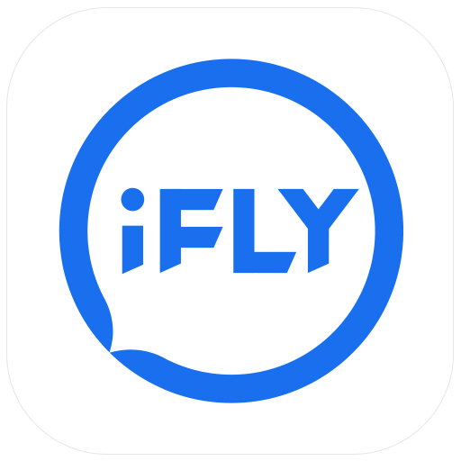

🌐 浏览器
⌨️ 输入法
📦 压缩工具
⚙️ 系统工具
🛡️ 安全防护
🎬 影音播放
💬 社交聊天
🚪 远程控制
🤖 AI工具
Google Chrome
快速、安全且免费的网络浏览器，支持自动更新和多设备同步功能
360安全浏览器
360浏览器是360公司官方推出的一款安全浏览器，浏览器设计简洁、界面清爽、页面浏览速度极快
Edge浏览器
Microsoft Edge 是一款 AI 浏览器。为您带来更智能的 保护创建查找浏览游戏购物学习体验
火狐浏览器(Firefox)
火狐浏览器(Firefox)是一个自由的，开放源码的浏览器；也是一款快速、轻量、注重隐私的浏览器，全平台可用。
360极速浏览器
360极速浏览器是一款极速、安全的无缝双核浏览器。它基于Chromium开源项目，具有闪电般的浏览速度
QQ浏览器
QQ浏览器是腾讯公司为用户打造的一款快速、稳定、安全、网络化的优质浏览器

猎豹浏览器
猎豹浏览器是一款安全可靠的双核浏览器，猎豹安全浏览器为用户提供更快更安全的浏览器上网防护
搜狗浏览器
搜狗高速浏览器独创预取引擎技术，引领新的上网速度革命，给您带来秒开网页的超快体验。
搜狗输入法
搜狗拼音输入法是一款打字更准、词库更大、速度更快、外观漂亮、用了让您爱不释手的输入法，是您装机输入的好选择。享受输入，从搜狗开始！

QQ输入法
QQ拼音是好用的拼音输入法,更快、更准、更绿色的输入法，让书写成为享受,具有词库随身带,精美皮肤更换和智能整句生成特点

讯飞输入法
讯飞输入法 - 更好用的电脑输入法，提供专业输入法定制解决方案！
搜狗五笔输入法
搜狗五笔输入法具有免费、无广告、兼容性好等优点，支持86版、98版、新世纪版五笔方案
QQ五笔输入法
QQ五笔输入法（简称QQ五笔）是腾讯公司继QQ拼音输入法之后，推出的一款界面清爽，功能强大的五笔输入法软件。

百度输入法
百度输入法官方版是一款集手写、语音、win10、笔画、鼠标手写、手机输入法于一体，非常便捷、好用的输入法

万能五笔输入法
万能五笔输入法诞生于1995年,拥有上千万忠实用户,目前万能五笔输入法支持五笔拼音混合输入,轻巧/快速/低耗/流程/精准是万能五笔输入法的核心亮点
2345王牌输入法
2345输入法专注于输入本质，关注核心体验，输入速度快，准确度高。用心提供较全词库，并保证词库每周更新

360压缩
360压缩是360推出的免费解压缩软件，360压缩快速轻巧、兼容性好、永久免费。360压缩内置云安全引擎，可以检测木马，更安全
WinRAR
Winrar是一款功能强大的文件压缩解压缩工具

7-Zip
7-Zip是一款完全免费而且开源的压缩软件，相比其他软件有更高的压缩比而且相对于WinRAR不会消耗大量资源
火绒安全软件
火绒是一款杀防管控一体的安全软件，有着面向个人和企业的产品。拥有简洁的界面、丰富的功能和很好的体验
360安全卫士极速版
360安全卫士极速版，病毒查杀,系统修复,文档解密,挖矿木马防护,垃圾清理,文件恢复,驱动下载,服务器防护,系统补丁更新,网络测速,软件管理
腾讯电脑管家
腾讯电脑管家是由腾讯公司推出的一款功能强悍，使用起来便捷高效的电脑防护软件。
QQ影音
QQ影音首创轻量级多播放内核技术，深入挖掘和发挥新一代显卡的硬件加速能力，软件追求更小、更快、更流畅，让您在没有任何插件和广告的专属空间里，真正拥有五星级的视听享受!
腾讯QQ
腾讯推出的即时通讯工具。支持在线聊天、视频电话、点对点断点续传文件、共享文件、网络硬盘、自定义面板、QQ邮箱等多种功能。免
微信
微信，一款跨平台的通讯工具。支持单人、多人参与，能通过网络发送语音、图片视频和文字信息，让线上沟通更方便
Todesk
ToDesk远程控制软件是一款稳定流畅的远程控制电脑手机连接软件,可远程桌面办公,远程协助运维.采用端对端加密,让每一次远程访问都安全可靠

向日葵
向日葵远程控制软件是一款拥有多年远控技术经验的远程控制软件，可远程控制手机，远程桌面连接，远程开机，远程管理等，并深入各行各业提供企业远程办公、企业IT运维、技术支持等企业远程解决方案